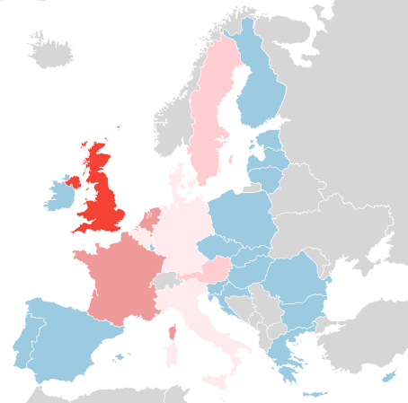

Verhoudingen#
Machtsstrijd#
Europese lidstaten zien de laatste tijd graag meer autonomie binnen de landen zelf en een kleinere rol voor de EU. Dit staat in schril contrast met de machtsstrijd die al jaren binnen de EU woedt. Enerzijds willen de grote EU-landen een soort Europese raad naar voorbeeld van de Veiligheidsraad van de VN, waarbij er vijf vaste leden zijn en de resterende plekken gerouleerd worden. Anderzijds willen de relatief kleinere Europese lidstaten meer zeggenschap hebben in het Europees parlement, waar zij nu nog maar weinig zetels hebben. Ter vergelijking: Duitsland, het Verenigd Koninkrijk, Italië en Frankrijk (4 van de 28 lidstaten) hebben gezamenlijk ~40% van de zetels in het Europese Parlement in handen.
Invloed vluchtelingencrisis#
De vluchtelingencrisis is nog steeds het gesprek van de dag. Duizenden mensen trekken van onder andere landen als Syrië, Irak, Afghanistan en Libië. Er was al langer sprake van een grote toestroom asielzoekers, maar die nam in het laatste jaar enorm toe en ook de snelheid waarmee de asielzoekers naar Europa trekken. Het probleem werd al langer aangekaart door Italië en verscheidene vluchtelingenorganisaties, maar andere Europese lidstaten negeerden het probleem.
Een fragment van de speech waar Angela Merkel haar nu beruchte "Wir schaffen das" statement maakte, 31 augustus 2015.
Ich sage ganz einfach: Deutschland ist ein starkes Land. Das Motiv, mit dem wir an diese Dinge herangehen, muss sein: Wir haben so vieles geschafft – wir schaffen das! Wir schaffen das, und dort, wo uns etwas im Wege steht, muss es überwunden werden, muss daran gearbeitet werden.
Na haar speech werd het vluchtelingenprobleem het gesprek van de dag en sindsdien is er erg veel media aandacht voor. Er is echter nog niet bewezen dat haar statement ook écht een oorzaak is voor de toename van het aantal vluchtelingen in Europa.
Door het grote aantal asielzoekende raakten veel landen in de problemen. De spanning onderling nam enorm toe, tot het punt waar Griekenland zelfs meerdere keren heeft gedreigd alle vluchtelingen Europa binnen te laten.
Sentiment#
De Europese regering besloot een quota op te leggen voor alle EU lidstaten. Het sentiment voor de EU nam hierdoor een duikvlucht. Veel regeringen en burgers zijn niet blij met de door de EU opgelegde quotas. De quota werd door de Brexit-campagne gebruikt als standpunt en had zo ook een grote invloed in het resultaat van het Brexit referendum.
Verhoudingen na het Brexit referendum#
Op 23 Juni 2016 koos de bevolking van het Verenigd Koninkrijk voor een vertrek uit de Europese Unie. Dit zette veel kwaadbloed bij de bevolking en regeringen van andere lidstaten. Het wordt verwacht dat de EU dan ook figuurlijk "de muren opgooit" om het Verenigd Koninkrijk af te zonderen van de interne markt.
Onderling in zijn de verhoudingen binnen het Verenigd Koninkrijk ook bekoeld geraakt, de vertegenwoordigers van Schotland zullen vrijwel zeker een tweede referendum voor afscheiding houden, bij het vorige referendum wilde de grote meerderheid blijven vanwege de Europese Unie.
Landen waarvan men bang is dat zij ook de EU zouden kunnen verlaten na het vertrek van het Verenigd Koninkrijk zijn onder andere: Nederland, Frankrijk en Oostenrijk. Al deze landen leunen richting populistische en rechtse meerderheden welke veelal tegen de Europese Unie in zijn huidige vorm zijn.

Algemene tevredenheid EU per lidstaat